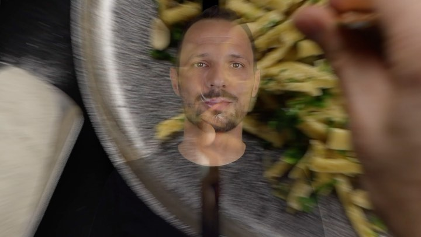

Domáce rezance podľa @mrpyco — Normy Jedál
na rad prichádzajú slíže - rezance - alebo ako inak ich ešte voláte?
Takéto ste dúfam ešte nejedli: Domáce rezance s pórom a arašidmi 🤪
#DomaceRezance 🥣 #HomemadeNoodles
☉ nákupný zoznam k novému videoreceptu je nižšie
☉ VIDEORECEPT 🔛 V SOBOTU
#mojejedlo #nebudkonzervatrebasivarit #javamvarim #kuchynalidla #spolupraca
🛒 suroviny:
☉ polohrubá múka 300 g (+ na pomúčenie)
☉ vajcia 2 ks
☉ olivový olej 4 PL (+ na pokvapkanie rezancov)
☉ červená cibuľa 1 ks
☉ cesnak 4 ks (strúčiky)
☉ pór 1 ks
☉ sójová omáčka 1 PL
☉ arašidové maslo 70 g
☉ solené arašidy, voda, soľ, čierne korenie, petržlenová vňať
porcie: 4 ● čas prípravy: 40 min